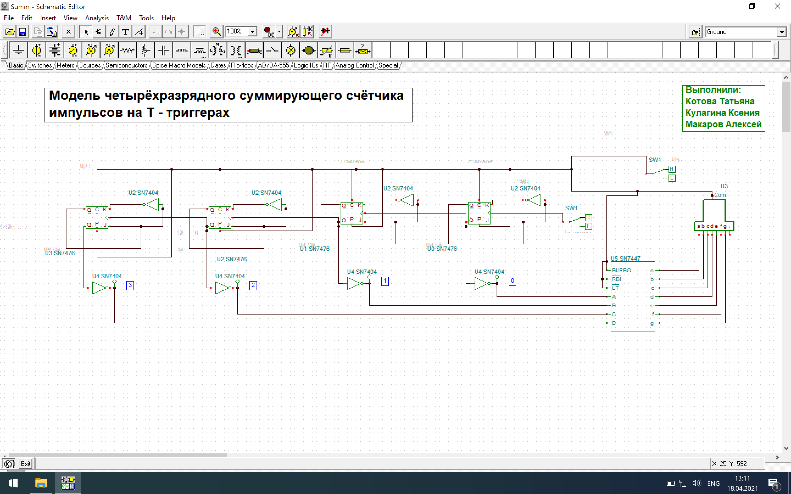
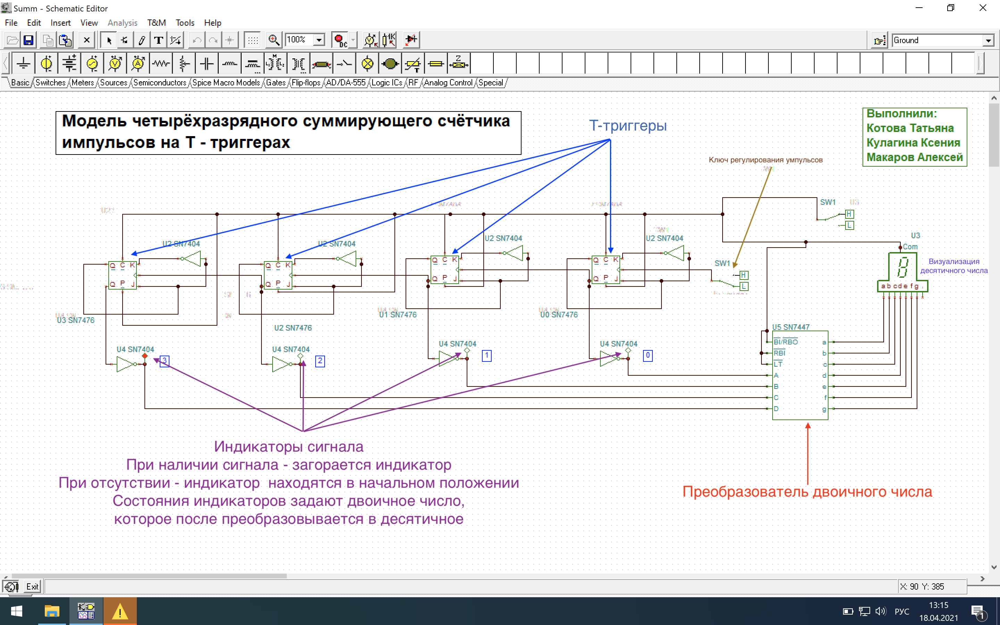
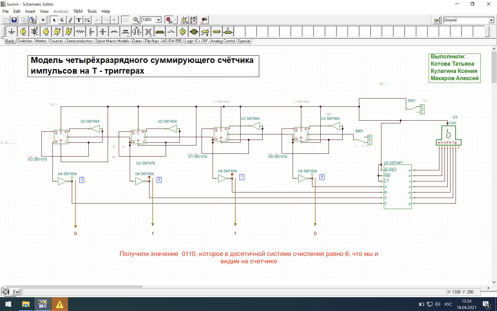
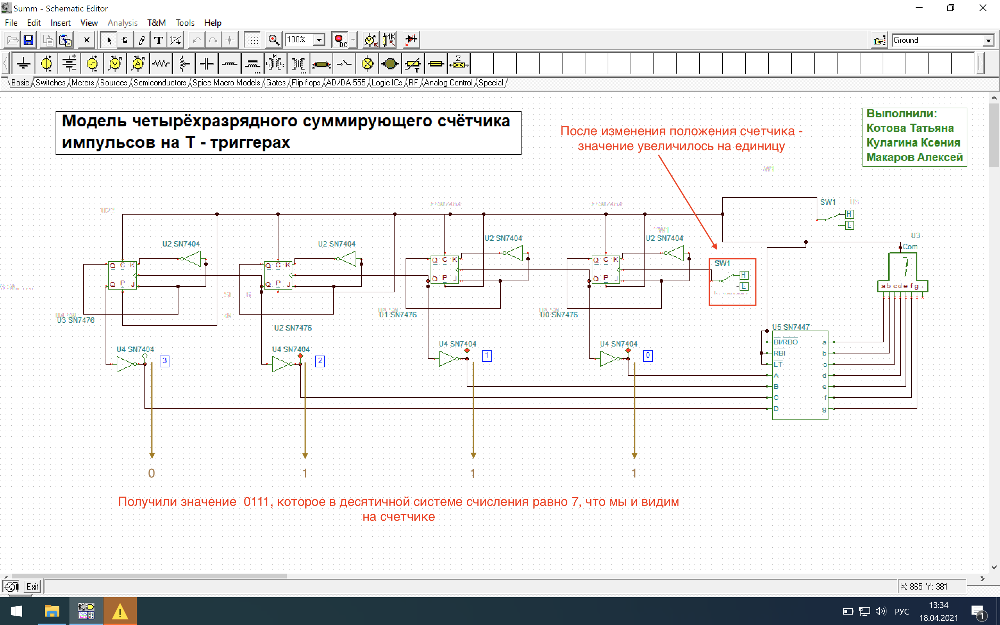

Используя программу электронного моделирования "TINA" мы построили схему четырех разрядного суммирующего счетчика импульсов на T-триггерах
Опишем составляющие полученной схемы
Тестирование схемы
Для начала дадим питание нажав в "Tina" кнопку "Interactive mode on/off"
Далее изменяя положение ключа для регулировки импульсов переключаем режимы работы, результат этого будет отображаться на семисегментном счетчике
Продемонстрируем результаты теста
Состояние 1
Состояние 2
Выводы
Собрав схему, запустив ее, сверив с теоретическими значениями, мы можем сказать, что задача 1 решена верно, тк значения полученные экспериментальным путем и значения теоретические совпали
При изменении положения ключа - нами наблюдалось увелечение числа на 7-ми сементном счетчике
На выходе счётчик показывает 7-ми сегментное изображение десятичного эквивалента, соответствуюзего двоичному числу на преобразователе.